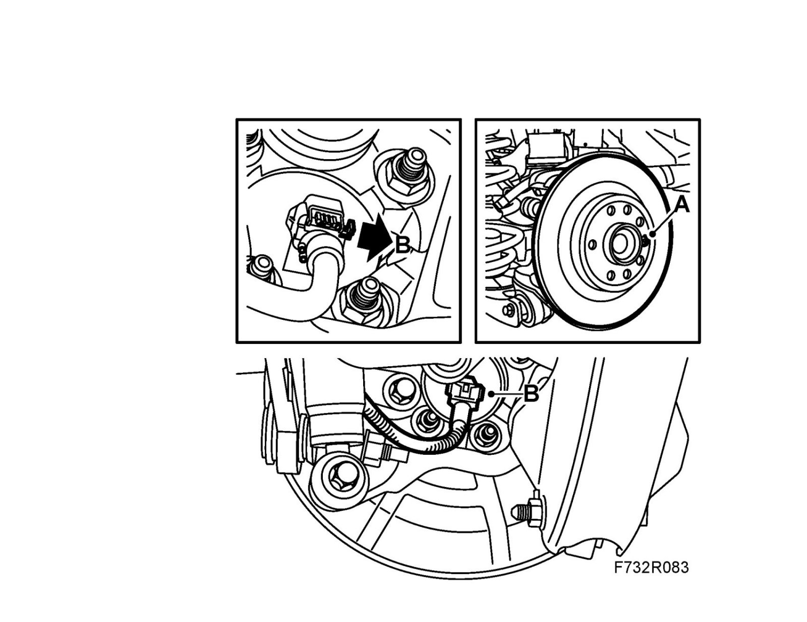
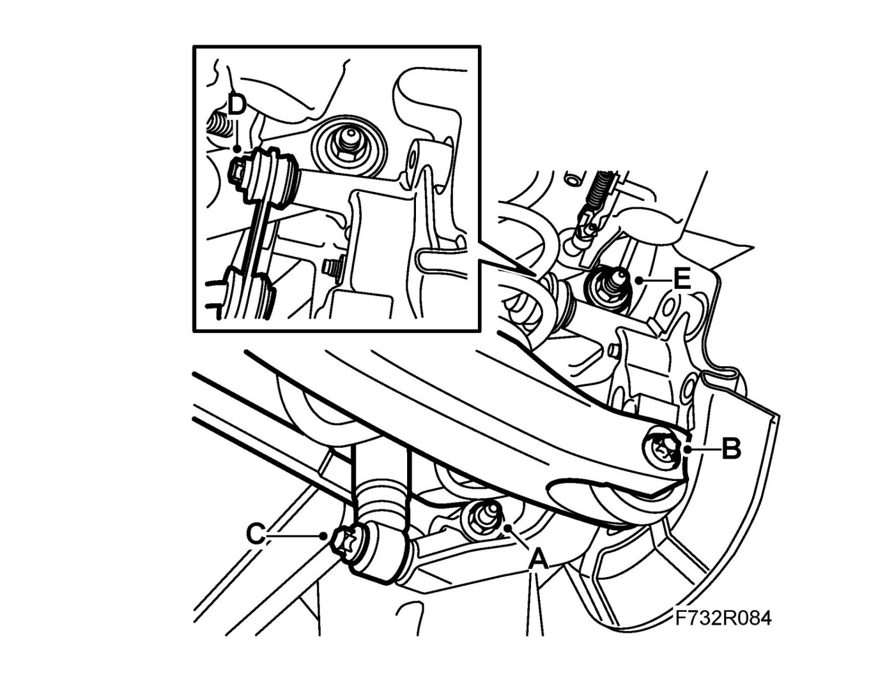
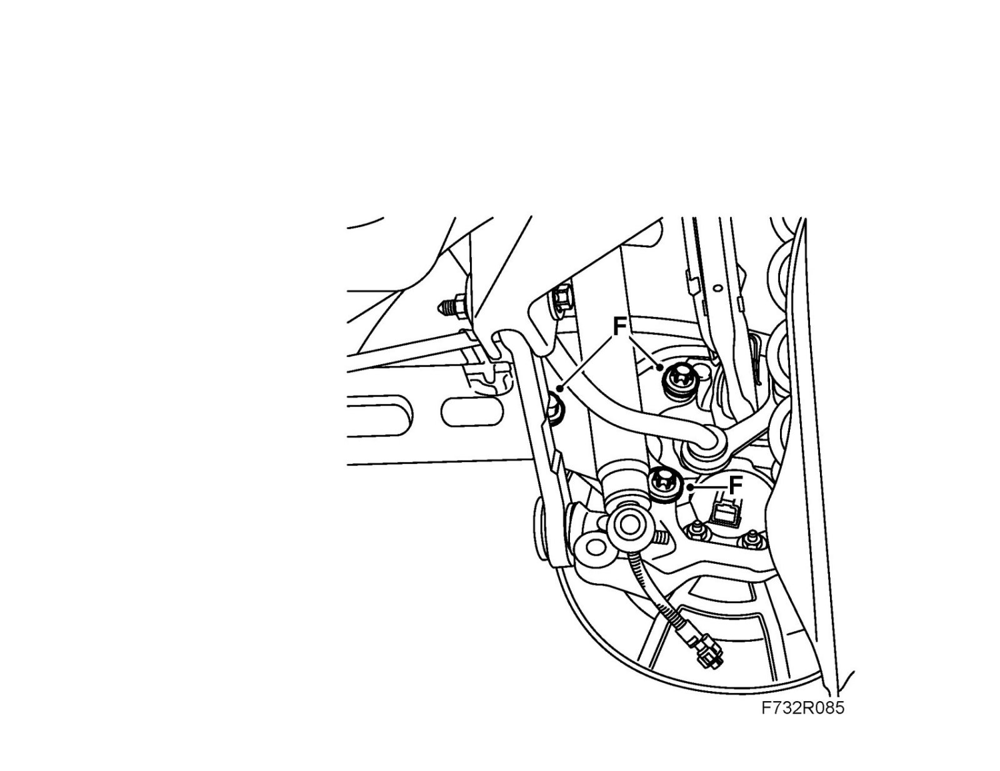
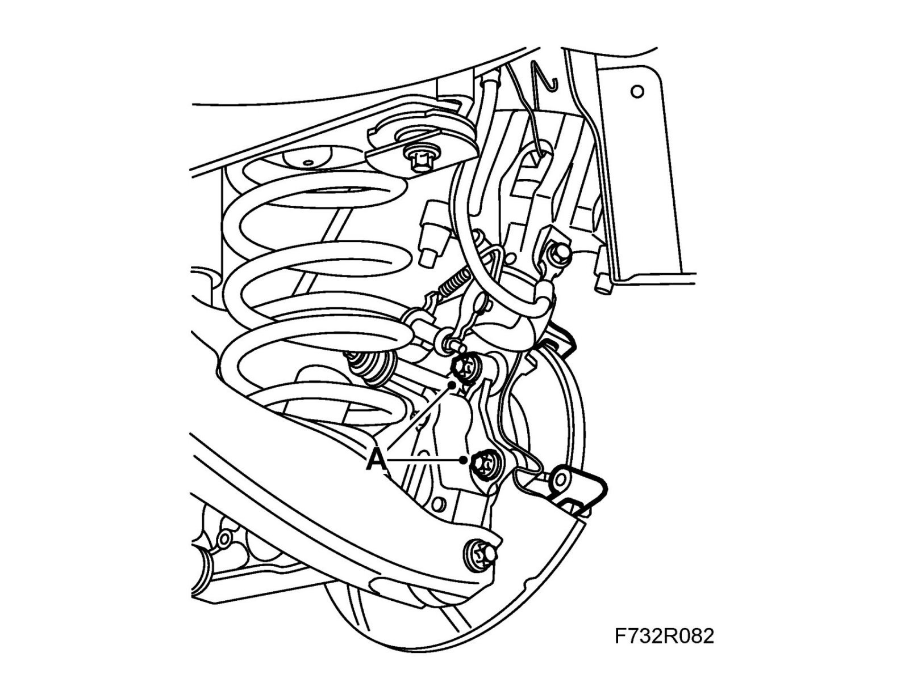
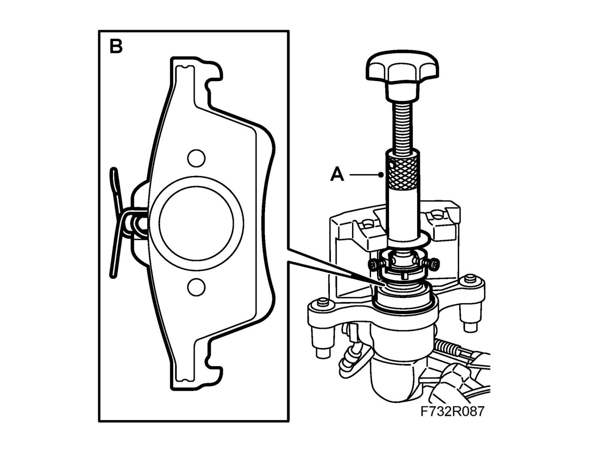
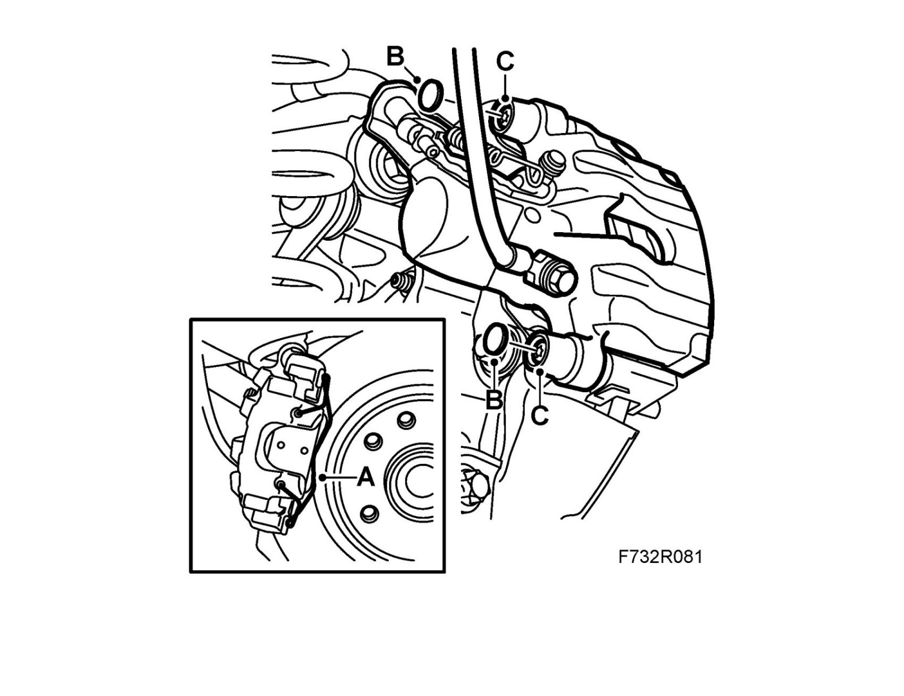

Rear Knuckle: Service and Repair
Steering swivel memberTo remove
1. Raise the car.
2. Remove the wheel.
3. Remove the brake caliper:

- Remove the retaining spring (A) from the brake pad.
- Remove the protective cover (B).
- Remove the hydraulic body (C) and suspend it with a hook in the brake pipe holder.
Important
Be careful that the brake pipes do not get damaged.
- Remove the brake pads.
4. Undo the bolt of the upper suspension arm to gain access to the bolt of the brake caliper holder. Remove the brake caliper holder (A).
Note
Do not tighten the suspension arm bolt fully.

5. Remove the brake disc (A) and wheel sensor connection (B).

6. Remove the steering swivel member:

- Clean, lubricate the bolt threads and remove the nut (A) which holds the toe-link to the steering swivel member.
- Relieve the weight from the lower suspension arm with a pillar jack and remove the bolt (B).
Note
The bolt must be unscrewed from the suspension arm.
- Remove the jack.
- Clean, lubricate the bolt threads and remove the lower shock absorber mounting (C).
- Remove the anti-roll bar link (D) from the steering swivel member.
- Remove the upper suspension arm (E) from the steering swivel member.
- Remove the steering swivel member (F) from the longitudinal link and lift the hub from the toe-link.
7. Remove the hub and the brake shield.
To fit
1. When fitting a new steering swivel member, transfer or fit a new bush in the steering swivel member. Remove the bush with KM 906-61-62, fit with KM 906-63-64 included in kit 89 96 761.
Clean the contact surfaces. Fit the hub and the brake shield with new nuts.
Tightening torque 50 Nm +30° (40 lbf ft +30°)
2. Fit the steering swivel member:

- Pull the steering swivel member onto the toe-link bolt and fit a new nut (A).
- Fit the steering swivel member to the upper suspension arm and fit a new nut (E).
- Fit the anti-roll bar (D) to the steering swivel member.
Tightening torque 53 Nm (39 lbf ft)
- Fit the steering swivel member (F) to the longitudinal link.
Tightening torque 150 Nm (110 lbf ft)

- Fit the lower shock absorber mounting (C).
Note
For correct fitting, see fitting Shock absorber.
Tightening torque 148 Nm +90°(109 lbf ft + 90°)
- Torque tighten the toe-link nut (A) using 89 96 613 Sleeve, MacPherson strut, MacPherson strut and hold with a 10 mm sleeve.
Tightening torque 75 Nm +60° (55 lbf ft +60°)
- Raise the lower suspension arm with a pillar jack and fit the bolt (B).
Note
The bolt must be screwed into the suspension arm.
- Lift the lower suspension arm to normal position with a jack and fit a new nut (B).
Tightening torque 75 Nm +90° (55 lbf ft +90°)
3. Fit the wheel sensor connection (B). Clean the contact surfaces between the hub and brake disc.
Fit the brake disc and the lock bolt (A).
Tightening torque 7 Nm (5 lbf ft)
4. Clean the contact surfaces between the brake caliper holder and the steering swivel member.
Fit the brake caliper holder (A) using 74 96 268 Thread locking adhesive.
Tightening torque 130 Nm +45° (96 lbf ft +45°)

5. Fit the brake pads:

- Screw in the brake piston using 89 96 969 Resetting tool and 89 96 977 Adapter (A).
- Fit the brake pads (B).
6. Fit the brake caliper:

- Fit the hydraulic body (C).
Tightening torque 28 Nm (21 lbf ft)
Important
Be careful that the brake pipes do not get damaged.
- Fit the protective cover (B).
- Fit the retaining spring (A) to the brake pad.
7. Tighten the nut which holds the steering swivel member to the upper suspension arm.
Tightening torque 125 Nm +135° (92 lbf ft +135°)
8. Fit the wheel.
9. Lower the car to the floor.
10. Depress the brake pedal several times to press out the self adjustment of the brake pistons and the parking brake.
11. Carry out four wheel checking and four wheel alignment.